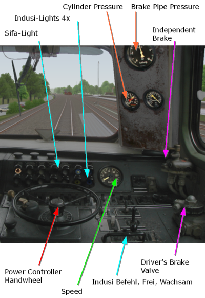
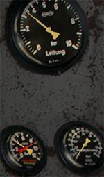
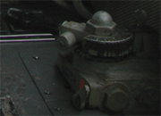

|
|
Welcome to the Driving School for the Zusi-Demoversion. In this Window you will be given assistance during your Journey.
You will be taking control of the Express Train D 2640 hauled by a Class 216 Diesel Locomotive in a section of route between Bad Driburg and Altenbeken. As Zusi simulates a complete railway network including all the train movements, it can often occur that after the program is launched, your Train may not yet be on the tracks in the Simulation. In this case you will then see the area where your Train will appear in the Simulation from an elevated perspective:

The Function runs the Simulation at high speed without any graphic display and returns to the normal simulation mode, as soon as the Train is placed on the Track. In addition there is also the Function, in which the Simulation is run at a higher speed but also with the graphics calculated and displayed.
Activate now the and after a few seconds you will find yourself in the Driver's Cab of the Train.
Your Train is scheduled to depart approximately 4 minutes after it is placed on the rails in the Simulation. If the time to read through these notes is too short, press once. The Simulator Time will then be frozen. Pressing again will Un-Pause the Simulation.
once. The Simulator Time will then be frozen. Pressing again will Un-Pause the Simulation.
Before you begin your Journey, you should familiarise yourself with the main indicators and controls in the Cab. The important items are discussed below:

If you would like to allow the computer to drive the route first, then press the  . The Computer then drives the Train, a second press of the button returns the Autopilot to off. The Autopilot can also be very helpful when one is not able to get the train going. Activating the Autopilot returns the Locomotive and Train back to their initial states.
In the following sections the Controls and Safety systems are only briefly described. For further information please refer to the Documentation.
. The Computer then drives the Train, a second press of the button returns the Autopilot to off. The Autopilot can also be very helpful when one is not able to get the train going. Activating the Autopilot returns the Locomotive and Train back to their initial states.
In the following sections the Controls and Safety systems are only briefly described. For further information please refer to the Documentation.
For all switches and levers you can use either the associated Keys on the Keyboard and also the Mouse. With the mouse you must click on the graphics of the switch or lever. With the left mouse button the switch or lever moves one position in a particular direction, with the right mouse button the switch moves one position in the other direction.
In the Driver's Cab, additional view are available. These can be accessed with the arrow keys (not in the Numeric Keypad).
The Engine Power can be controlled as desired using 15 Power Notches (Arrow Keys in the Numeric Keypad up/down, Numeric Keypad 5 switches immediately back to Notch 0).
The Braking is achieved using a compressed air system, the state of which is displayed by the Pointer of the Brake Cylinder Pressure Gauge (lower left pressure gauge, yellow needle ): 0 bar means no Braking Force, the higher the pressure, the harder the brakes are applied.
 The operation of the Brake Cylinders is controlled through
the Brake Pipe. The Brake Pipe Pressure can be read from the yellow Pointer of the upper
pressure gauge. In normal operation the pressure in the Brake Pipe varies
between 5 bar (Brake is released) and 3,5 bar (full Braking Force). Pressure values in the Brake Pipe
outside this range do not normally further increase/reduce the Braking Force.
The operation of the Brake Cylinders is controlled through
the Brake Pipe. The Brake Pipe Pressure can be read from the yellow Pointer of the upper
pressure gauge. In normal operation the pressure in the Brake Pipe varies
between 5 bar (Brake is released) and 3,5 bar (full Braking Force). Pressure values in the Brake Pipe
outside this range do not normally further increase/reduce the Braking Force.

The upper illustration shows the Braking System in the released state (Brake Pipe Pressure 5 bar, Brake Cylinder Pressure 0 bar)The lower illustration shows the Braking System in the fully applied state
(Brake Pipe Pressure 3,5 bar, Brake Cylinder Pressure approximately 4 bar)

The control of the pressures is achieved throught the Driver's Brake Valve, which controls the pressure in the Brake Pipe depending on the position of the handle, in fine increments between 5 and 3,5 bar. The first picture shows the Running Position, which regulates the pressure to 5 bar. The second picture shows the Full Service Braking
position (3,5 bar). The Brake Valve can be moved from position to position with Plus-/Minus-Keys
(Numeric Keypad) . Each press of the Plus-Key progressively lowers the pressure in the Brake Pipe
by a further increment, with a corresponding increase in the Braking Force.
The second picture shows the Full Service Braking
position (3,5 bar). The Brake Valve can be moved from position to position with Plus-/Minus-Keys
(Numeric Keypad) . Each press of the Plus-Key progressively lowers the pressure in the Brake Pipe
by a further increment, with a corresponding increase in the Braking Force.
Independent Brake
The Independent Brake operates only on the Locomotive and is used to hold the Train when it is stationary. You can now place the Driver's Brake Valves to the "Running" position and hold the Train stationary with the Independent Brake (#-Key 2x presses), as a confirmation, the Brake Cylinder Pressure (yellow pointer on the lower left pressure gauge) must increase. ***Check the keys for this (Zusatzbremsventil), english keyboard may have different layout to German***
Speed Indicator
Here you can see your actual speed.
The Sifa checks that the Driver remains conscious ("Deadman-Device"). Depending on the type,every 20 to 40 seconds the Sifa-Button (Spacebar) must be pressed. If this is forgotten, at first the Sifa Light will illuminate, and after another few seconds the Sifa Buzzer will sound. If the Sifa-Button is still not pressed then an Emergency Brake Application will result. A subsequent press of the Sifa-Button will immediately cancel the Emergency Application.
The Indusi I60-System monitors the observance of the Signals. Further explanation will be given during the Journey.
To meet the Timetable schedule, in the Driver's Cab to the left of the Indicator Lights you will find a clock. (not visible in the overview picture above).
The Timetable Book in a separate Window shows the Driver the permitted Speeds and the scheduled Timetable for this Train. A further explanation will follow during the Journey.

Every route is assigned with Route-Kilometres, these then relate to the Timetable Book. The marking of the Route-Kilometres can be found every 200m on white boards beside the track.
With F8 you can display/hide the Cheat Info, the Information displayed, would not be available to a real Train Driver In the beginning however, it may provide you with some helpful guidance.
With this basic grounding you should be able to begin your Journey. Once you are underway,
if you would like to Pause, for example to read a section of this text in peace,
then press  .
A second press of the Key will resume the Simulation. (Don't worry about the compliance with
the schedule - the clock will of course also be stopped during the Pause.)
.
A second press of the Key will resume the Simulation. (Don't worry about the compliance with
the schedule - the clock will of course also be stopped during the Pause.)
This concludes the Introduction, you must wait now for the Conductor's Departure Signal!
The other Help will be displayed interactively during the Journey.

 Proceed:
Proceed past signal up to maximum permitted speed in this case 100km/h,
refer Timetable Book:
Proceed:
Proceed past signal up to maximum permitted speed in this case 100km/h,
refer Timetable Book: